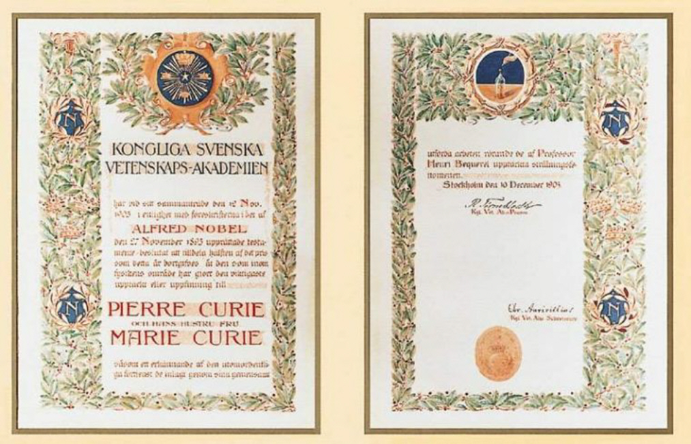
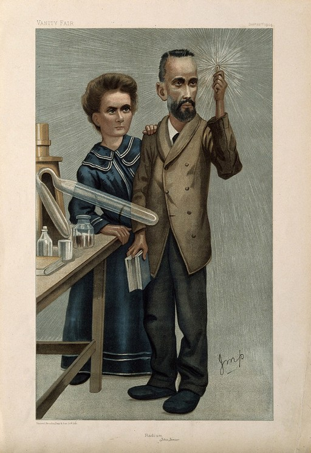

4 The Choice
of the Items
The first task for the project was to select 10 different types of items related to our idea. In the selection process, it was needed to consider only objects that had already been described as items on the Web by cultural institutions.
Firstly, we thought about what in our opinion could draw a file rouge through Marie Curie’s life. Therefore, in order to achieve a more complete representation of the key moments and the essential passages that characterized her figure, we decided to consider both the Nobel Prizes won by Mme. Curie. That is why the items presented in this project are actually 11, 2 of which are exactly of the same type.
In particular, the objects have been chosen also because they have special connections with other people, places, periods of time and concepts. In conclusion, each item presents a link to the providing institution, or aggregator, along with a brief description.
Marie Curie's Radioactive Notebook
Full of drawings and notes, it was used from 1899 to 1902. Marie Curie’s notebook is still radioactive: it is necessary to wear special gears to protect oneself from radiactive contamination.
Photograph of Marie Curie with her daughters
Marie Curie pictured with her two daughters, Irène and Ève, in 1904, two years before Pierre’s accidental death. The first daughter won the Nobel Prize in Chemistry in 1935 for the development of synthetic radioactivity together with her husband Frédéric Joliot, while the second was both an artist and an activist, and worked for the UNESCO.

Marie and Pierre Curie's Nobel Prize in Physics - Diploma
Working under very precarious conditions and unaware of the harmful effects that these “spontaneous” radiations have on the human organism, the Curie’s treated a tonne of pitchblende, of which they isolated a 1-gram fraction of radium. This discovery, based on the previous studies made by Bequerel, led the three scientists to receive the Nobel Prize in Physics in 1903.
Commemorative Stamp
Both Curies and Antoine Henri Becquerel shared the 1903 Physics Nobel Prize: commemorative stamps did not take long to be produced, and, actually, never stopped to be. This work in particular dates back to 1963. It was ideated by Arne Wallhorn for the country that gave birth to the Nobel Prize, Sweden.
.jpg)
Treatise on Radioactivity
In 1910, Marie Curie wrote the “Treatise on radioactivity”. This work earned her a second Noble Prize the year after. The content of this document focuses mainly on radioactivity, polonium (back to Becquerel foundational studies), and radium.

Litograph of Marie and Pierre Curie Holding a Glowing Specimen of Radium
Marie Curie was the first person ever to use the term “radioactive” in order to describe elements that emit radiation when their nucleus decomposes. This print, that came together with the Vanity Fair magazine in 1904, celebrates the two consorts together with the blue-mauve element of radium.
Journal Article: Marie Curie Honors
Pierre’s unexpected death caused an obscure period of time in the life of Marie. Desolated, she decided to accept her husband’s position at the University of Sorbonne as well as to deeply dedicate herself to research.
Radithor
Considered to be the ancestor of the contemporary energy drinks, the Radithor was a bottle of glass containing, mainly, radioactive distilled water. The negative effects of radioactivity were discovered only at a later time. Meanwhile, also the production of beauty treatments based on radioactive components increased exponentially. Together with its luminescence, radium soon became well known for its "miraculous cures", until many products relying on the imaginary powers of this element became to be referred to as real “Radium Quackeries”, radithor included.
Marie Curie's Nobel Prize in Chemistry - Diploma
1911: the Nobel Foundation conferred the Prize for Chemistry to Marie Curie, who, together with her daughter Irène, was able to conduct studies supporting “the advancement of chemistry by the discovery of the elements radium and polonium, by the isolation of radium and the study of the nature and compounds of this remarkable element."
French Army X-Ray Ambulance in Action
During the First World War, the French army had some delays in providing ambulances. That is why Marie Curie joined the Union of Women of France, which gave her money to produce the first of a series of cars outfitted with X-ray equipments. “The little Curie” model was born.
Radioactive - Movie
“Radioactive” is a film by Marjane Satrapi in which the story of the scientist comes to life. The main character, together with Marie, is for sure the luminescent Radium.
.png)
.png)